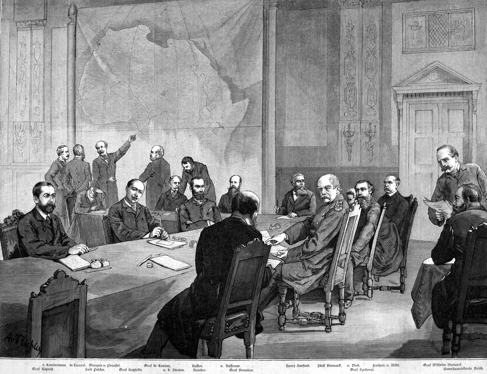

<div class="h-100 tree-of-liberty background-yellow d-flex justify-content-center">
    <div class="all-width screen-size container-for-scroll">
        <div class="position-relative w-100 mx-auto h-100  p-0 d-flex flex-column">
            <div class="page-14 flex-grow-1">
                <div class="d-flex align-items-center user">
                    <h2 class="culper-ring__texts__title m-0 bg-black tree-title text-yellow">
                        <span class="blue-after-line d-inline-block position-relative border-bottom-line-orange">Scramble </span>
                        <span class="blue-after-line d-inline-block position-relative border-bottom-line-orange">for</span>
                        <span class="blue-after-line d-inline-block position-relative mig border-bottom-line-orange">Africa</span>
                    </h2>
                    <button id="page_49_audio_play" type="button"
                            class="border-0 bg-transparent user__img overflow-hidden flex-shrink-0"
                            data-toggle="tooltip" data-placement="bottom"
                            title="Click the professor to hear his commentary on the period">
                        
                    </button>
                    <audio muted autoplay>
                        <source src="assets/img/khari/audio-video/khari05.mp3" type="audio/mpeg">
                    </audio>
                </div>
                <p>
                    The Berlin Conference of 1884 marked a key moment in the push for taking over
                    massive swaths of the African content, but annexing portions of Africa was not new
                    to European powers in the nineteenth century. On the contrary, history reveals that
                    the Spanish and Portuguese were already exploring the African coast as early as the
                    sixteenth century, with French forces arriving in the subsequent century.
                </p>
                <p class="culper-ring__texts__subDesc text-decoration-none">
                    Their central goal was to expand their own national presence under the pretext of
                    imperialism – that is, the desire to further one’s nation by taking over new
                    territories and “reforming” them to a European way of life – but they also saw
                    Africa as an untapped array of natural resources that could support the rampant wave
                    of industrialization that was sweeping Europe. In addition to the resources
                    necessary for industry, Africa also offered a plethora of precious materials such as
                    ivory. As a result, during the 19th century an
                    increasing number of European began to stake claims to areas of the African coast.
                </p>
            </div>
            <div class="position-relative the-berlin-conference position-relative d-flex align-items-end">
                
                <div class="d-flex justify-content-end position-absolute the-berlin-conference-item">
                    <div class="d-flex align-items-center p-0 ml-auto mb-0">
                        <div class="dropdown show d-flex align-items-center tree-of-liberty-dropdown">
                            <a
                                    class="rounded-circle tree-of-liberty__btn text-white border-0 d-flex align-items-center justify-content-center bg-white dropdown-toggle flex-shrink-0"
                                    href="#"
                                    role="button"
                                    id="theBerlinConference "
                                    data-toggle="dropdown"
                                    aria-haspopup="true"
                                    aria-expanded="false">
                            </a>
                            <div class="p-0 info position-relative transitionX-30">
                                <h3 class="m-0">The Berlin Conference</h3>
                            </div>
                            <div
                                    class="dropdown-menu author"
                                    aria-labelledby="pushPullFactors">
                                <button class="btn bg-transparent border-0 shadow-none position-absolute close-sticky-modal p-0"
                                        type="button">
                                    <svg width="25" height="25" viewBox="0 0 60 60" fill="none" xmlns="http://www.w3.org/2000/svg">
                                        <path d="M33.3147 30.0001L59.3135 4.00115C60.2288 3.0858 60.2288 1.60174 59.3135 0.686512C58.3981 -0.22872 56.9141 -0.228837 55.9988 0.686512L29.9999 26.6854L4.00115 0.686512C3.0858 -0.228837 1.60174 -0.228837 0.686512 0.686512C-0.22872 1.60186 -0.228837 3.08592 0.686512 4.00115L26.6853 29.9999L0.686512 55.9988C-0.228837 56.9142 -0.228837 58.3983 0.686512 59.3135C1.14413 59.7711 1.74401 59.9998 2.34389 59.9998C2.94377 59.9998 3.54353 59.7711 4.00127 59.3135L29.9999 33.3147L55.9987 59.3135C56.4563 59.7711 57.0562 59.9998 57.6561 59.9998C58.256 59.9998 58.8558 59.7711 59.3135 59.3135C60.2288 58.3981 60.2288 56.9141 59.3135 55.9988L33.3147 30.0001Z" fill="#282828"/>
                                    </svg>
                                </button>
                                <div class="w-100 h-100 popup-container">
                                    
                                    <div class="d-flex flex-wrap align-items-end px-3">
                                        <p class="my-3 text-center">
                                            <small>
                                                The conference of Berlin, as illustrated in "Illustrierte
                                                Zeitung"
                                            </small>
                                        </p>
                                        <ul class="list-unstyled">
                                            <li class="mt-1">
                                                The Berlin Conference was called on 15 November, 1884, and
                                                brought together fourteen international powers – the United
                                                States along with thirteen of Europe’s most influential
                                                nations – with the aim of setting policy for the subdivision
                                                and oversight of the African continent.
                                            </li>
                                            <li class="mt-3">
                                                The result of the meeting, which drew to a close on 26
                                                February 1885, was the Berlin Act, which aimed to abolish
                                                slavery and initiate free trade throughout the region of
                                                Congo; it also subdivided the continent into regions that
                                                European powers could lay claim to legally. It was also the
                                                Berlin Act that gave Belgian King Leopold II exclusive
                                                control of the territories he already possessed, which meant
                                                his near total consumption of what became known as the Congo
                                                Free State.
                                            </li>
                                        </ul>
                                    </div>
                                </div>
                            </div>
                        </div>
                    </div>
                </div>
            </div>
            <div class="page-number position-sticky text-center w-100">49</div>
        </div>
    </div>
</div>
